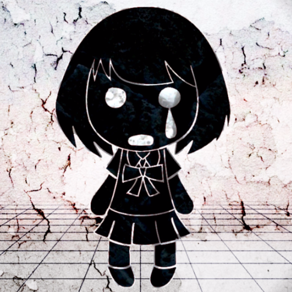

Productores destacados

DECO*27
Estilo pop rock emocional, melodías fuertes y letras intensas.

ryo (supercell)
Arreglos épicos y emotivos, sonido icónico del early Vocaloid.
Wowaka
Ritmos frenéticos, rock alternativo y letras de ansiedad moderna.
kz (livetune)
Electropop brillante, synths limpios y flow muy melódico.

Maretu
Industrial oscuro, percusiones agresivas y temas intensos.
Mitchie M
Sonido pop hiper-pulido, voces muy claras y producción impecable.